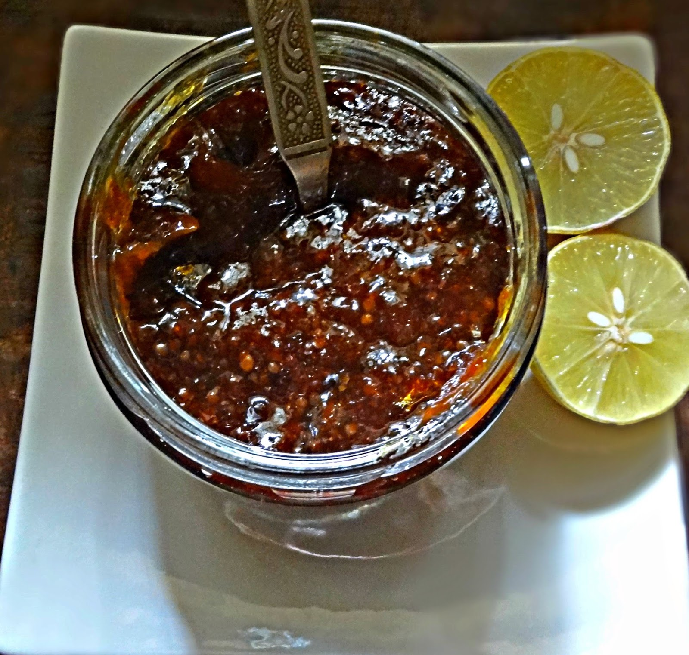

ઘટકો
માપન વિગતો - 1 કપ - 240 ml, 1 tbsp - 15 ml, 1 tsp - 5 ml
4 મધ્યમ કદના લીંબુ મેં 3 ફારસી વેરાયટી અને 1 મેયર વેરાયટીનો ઉપયોગ કર્યો જ્યારે લગભગ 2 કપ કાપેલા
½ કપ પાણી
5 ચમચી જીંજેલી તેલ વિભાજિત (2 ચમચી + 3 ચમચી)
1.5 tbsp red chili powder
¼ ટીસ્પૂન હળદર પાવડર
½ ચમચી સરસવનો પાવડર
1 ચમચી મીઠું અથવા સ્વાદ અનુસાર
⅓ થી ½ કપ ગોળ અથવા જરૂર મુજબ (મેં ½ કપ સ્ટોરમાંથી ખરીદેલ પાઉડર ગોળ ઉમેર્યો, વધુ વિગતો માટે રેસીપી નોંધો તપાસો)
2 ચમચી સરસવ
1.5 ચમચી મેથીના દાણા
½ ટીસ્પૂન હિંગ
ઇન્સ્ટન્ટ પોટના અંદરના વાસણમાં 2 ચમચી તેલ ઉમેરો અને તેને સરખી રીતે ફેલાવો. અંદરના વાસણના તળિયાને તેલથી સરખી રીતે કોટ કરો. હવે તેમાં કાપેલા લીંબુ ઉમેરો.
આગળ, એક પછી એક બધા મસાલા ઉમેરો - લાલ મરચું પાવડર, સરસવ પાવડર, હળદર પાવડર અને મીઠું. ઉપર ½ કપ પાણી ઉમેરો - મિક્સ કરવાની જરૂર નથી. હવે ઇન્સ્ટન્ટ પોટ બંધ કરો. ખાતરી કરો કે સીલિંગ રિંગ ચાલુ છે, અને વેન્ટ સીલિંગ સ્થિતિમાં છે. હાઈ-પ્રેશર સેટિંગ પર 20 મિનિટ માટે પ્રેશર કુક કરો. દબાણને કુદરતી રીતે છોડવા દો. ઝટપટ પોટ ખોલો અને હવે અથાણું મિક્સ કરો. તે પાણીયુક્ત દેખાશે, અને તે ઠીક છે.
આઈપીને સાઈટ મોડમાં સેટ કરો અને ગોળ ઉમેરો. તેને મિક્સ કરો અને લગભગ 12 થી 15 મિનિટ સુધી ઉકળવા દો. સ્પ્લેશિંગ ટાળવા માટે IP ને ઢાંકણ વડે આંશિક રીતે આવરી લો. વચ્ચે મિક્સ કરો જેથી અથાણું તળિયે અટવાઈ ન જાય. અથાણું ધીમે ધીમે ઘટ્ટ થશે, અને જેમ જેમ તે ઠંડુ થશે તેમ તે વધુ જાડું થશે. જો તમને અથાણું મીઠું ગમતું હોય, તો તેને 7 થી 8 મિનિટ માટે ઉકાળો. તમે અથાણાંના પુલાવ/ચોખા બનાવવા અથવા ઘઉંના લોટ સાથે મિક્સ કરીને મસાલેદાર અથાણાંના બ્રાઈન પરાઠા બનાવવા માટે અથાણાંના દરિયાનો ઉપયોગ કરી શકો છો.
અથાણું ટેમ્પરિંગ
એક અલગ ટેમ્પરિંગ પેનમાં, બાકીનું 3 ચમચી તેલ ઉમેરો. તેલ ગરમ થાય એટલે તેમાં સરસવ, મેથીના દાણા અને હિંગ નાખો. સરસવના દાણાને ફાટવા દો. તાપ બંધ કરો અને તેને અથાણાંમાં ઉમેરો.
તેને સારી રીતે મિક્સ કરો અને એર-ટાઈટ કન્ટેનરમાં સ્ટોર કરતા પહેલા ઠંડુ થવા દો.
Devloped by:Khushi